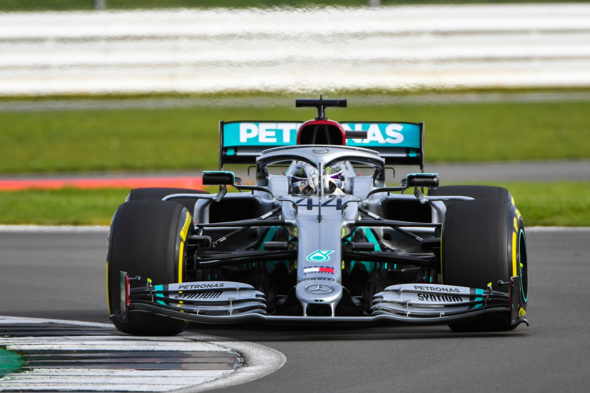
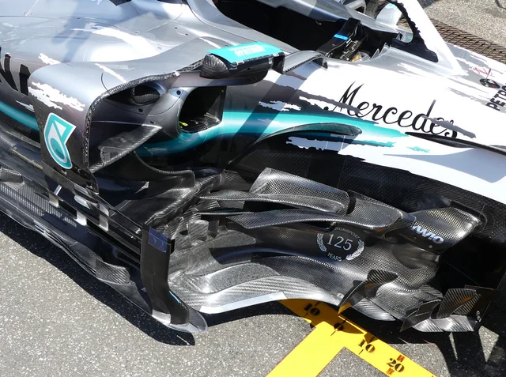
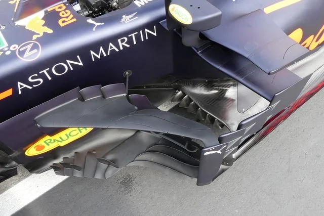
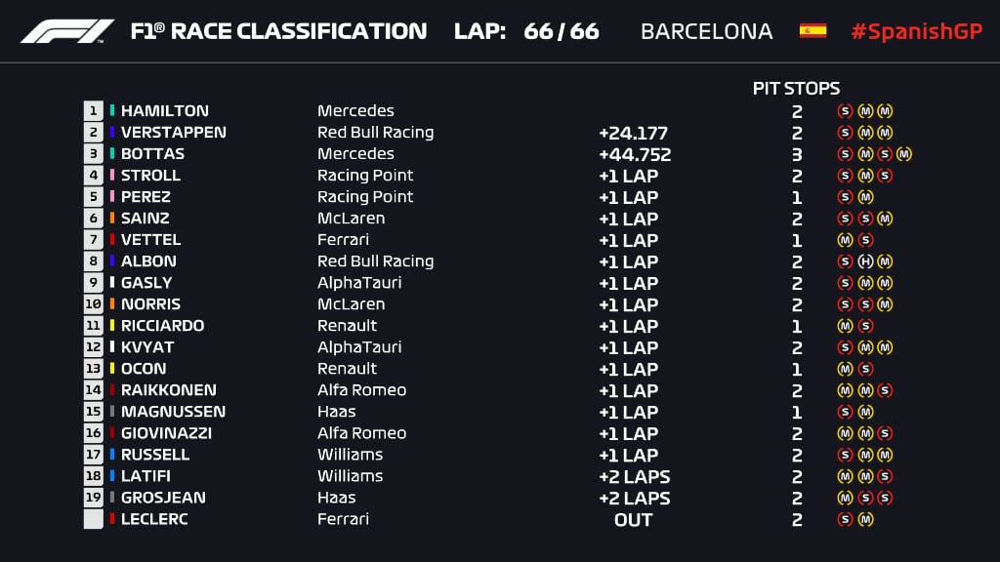
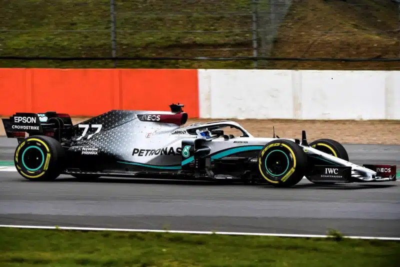
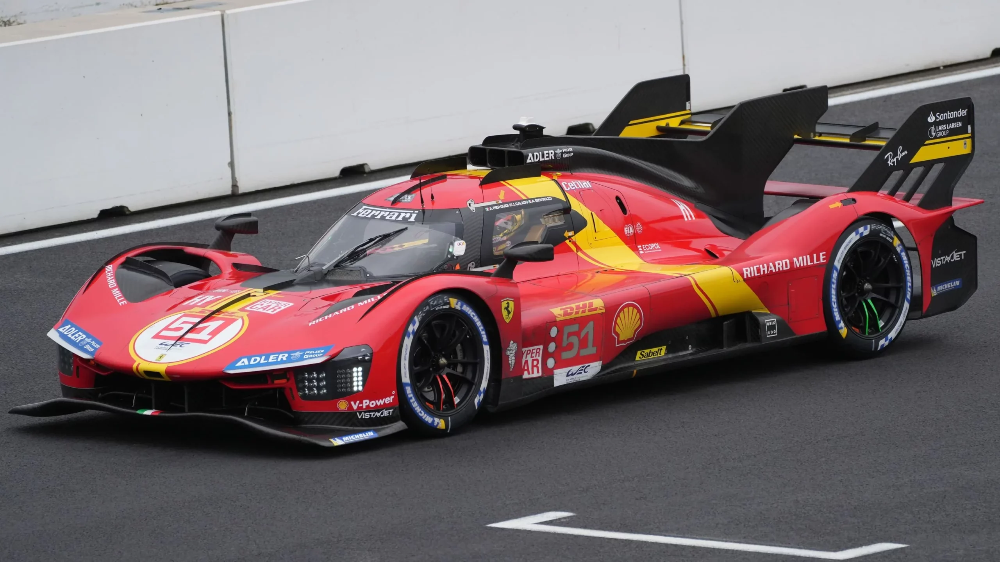
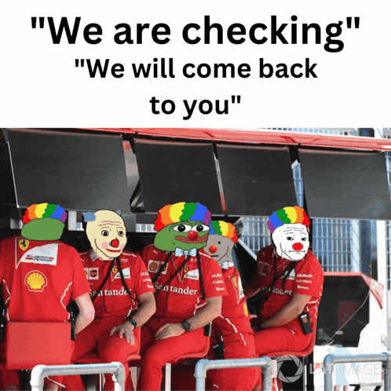

2017~2021 시즌의 대표격 차량이라 할수있는 2020시즌의 메르세데스 W11
메르세데스는 이 차로 2020시즌을 압도적으로 우승하며 7연속 우승을 달성한다
이렇게보면 그냥 F1 차네 싶은 모습

가까이에서 보면 이게 대체 어떤 역할을 하는건지 상상도 안되는 모습을 하고있다

레드불 역시 이게 뭐여 싶은 디자인
다?행?히 우리가 바보라서 이해가 안되는건 아니고

(2020 스페인 그랑프리)
엔지니어들도 이해를 못해서 3등밑으로는 1바퀴 이상 뒤쳐지는 모습을 보여주기도 했다
(1,3등인 메르세데스와 17,18등인 윌리암스는 같은 엔진을 사용함)

크기도 오질라게 커서 가장 긴 차로 꼽히는 W11의 경우 전장이 5.7미터가 넘는다는 이야기가 있다(신뢰성있게 공개된 자료는 찾기어려움)
전폭은 규정상한이 2미터
얘가 전폭 1995mm에 전장 5155mm다
폭은 비슷하고 전장은 F1차량이 더 긴셈
이후 크고 복잡하고 팀밸런스도 안맞는 상황을 벗어나고자
디자인규정을 덜 복잡하게 단순하게 바꾸고 (하지만 의도대로 안됐음)
비용제한(버짓캡)을 걸어서 돈지랄싸움을 막는 규정들이 나왔다 (하지만 돈지랄 하던놈들이 지금도 잘함. 페라리제외)
성적도 애매한 F1에 4억달러씩 꼬라박다가 버짓캡때문에 돈이 남게된 페라리는 내구레이스도 다시 손을댔고

499P로 23,24,25 3년연속 르망24시를 우승하는 쾌거를 이룩한다

물론 당연히 그동안 F1성적은 영....
내구레이스 하는 만큼 F1도 좀 해봐라 십색기들아
어제 바쿠 쿨다운 룸에서 오죽하면 대놓고 "페라리 좀 느린데?" 가 나오냐